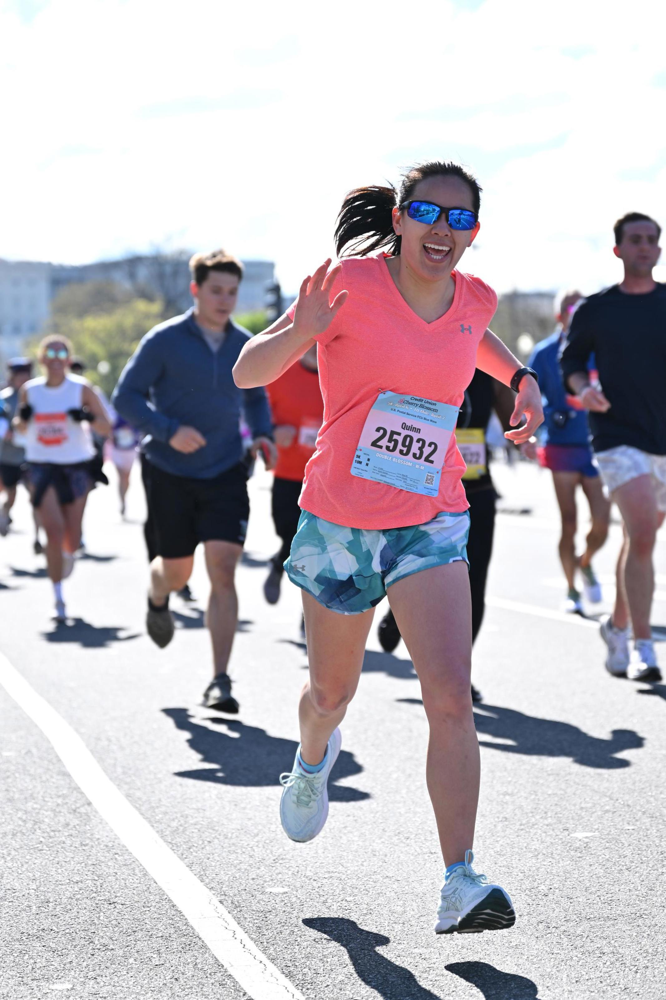
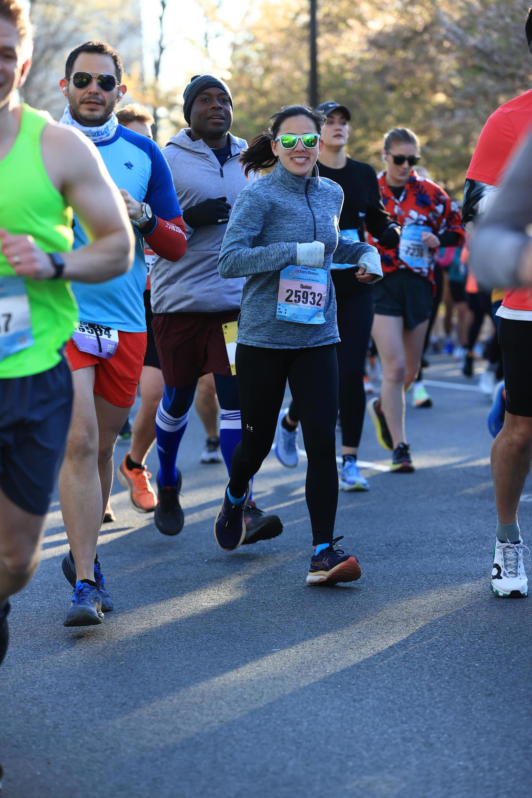
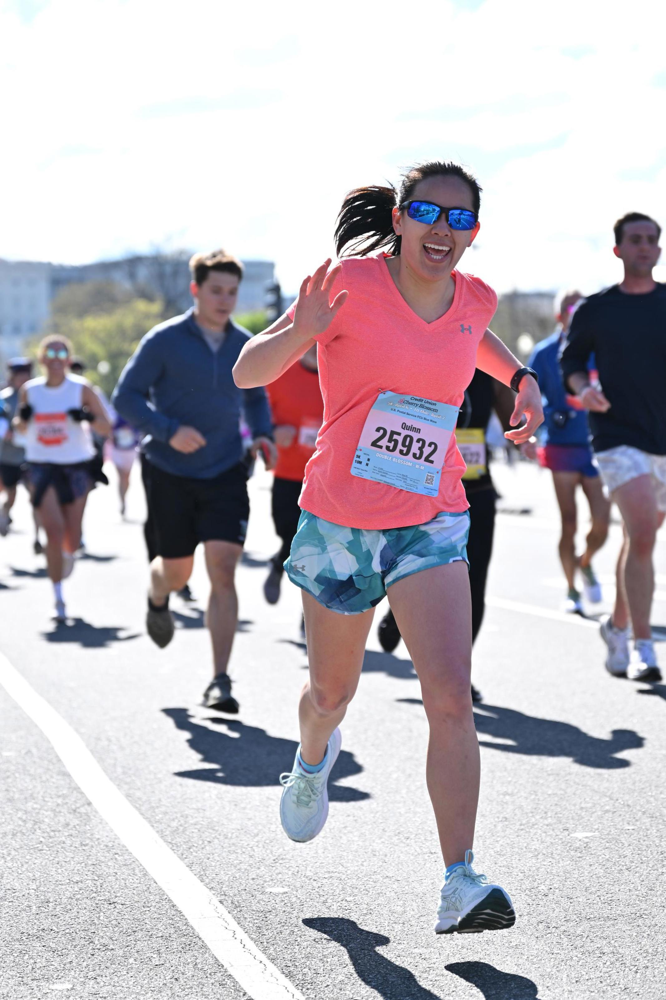
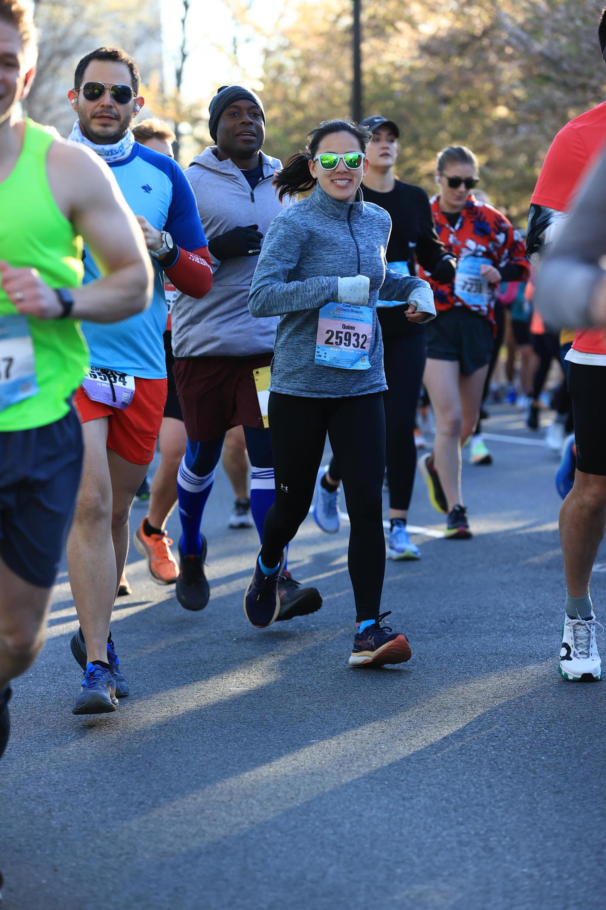
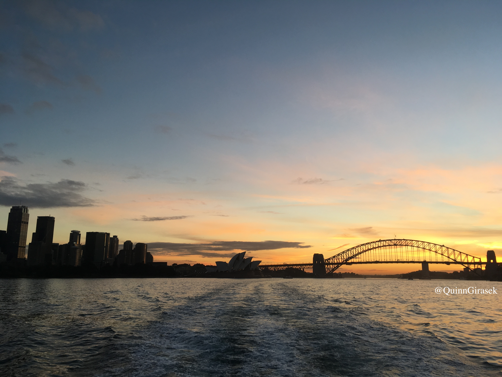
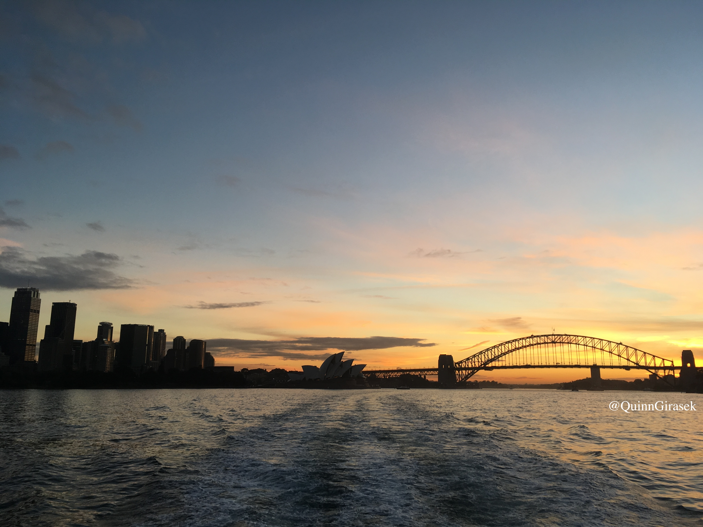

Website Design
I've been interested in website design and development since I took a class in high school. In fall 2021, I took a website design course at my college. This website here was initially built at the beginning of summer 2021 to refresh myself with HTML, CSS, and JavaScript. Last updated: May 2024.
3D prints
The .stl files for prints here were obtained from thingiverse. However, I have made some prints that I designed.
For 3D printing, I used the PrusaSlicer in the physics department at my college, except for the blue gsd print (from high school).
Scroll on the pictures to see more!
3D designs
For 3D design, I've been using Blender and the Wacom Intuos Creative Pen Tablet.
Scroll on the pictures to see more!

Running
I would say I picked up running more seriously in 2022. My first 5K was in 2014, as part of the Girls on the Run group.
I didn't run in high school and then in college only ran in the summers between semesters. I started strength training in 2020 during the lockdown and really enjoyed it.
Since graduating from college, I ran as much as I could (excluding my vacation and OceanX internship).
Later that fall, the Sunday before the race, I decided to sign up for the 10K (Thanksgiving Turkey Chase), having not run more than 4 miles in my entire life (at that point).
Did I train? No, not really. All I did in the 8 weeks leading up to it was a 6 day strength training plan and ran a bit here and there, with the most mileage in one week being 2 miles.
However, I finished my first 10K in just under an hour. The first half of the course was mostly downhill with some uphills, and the second half was all uphill.
The race environment and crowds were good and I had energy to sprint to the end, which was a lot of fun.
At the end of the 10K, I decided that I was going to start training for a half marathon, and then followed the Nike Run Club app. While I ran the half marathon distance, I still have not actually raced that distance.
I have raced two 10 milers, with one being part of a 5K/10 Mile weekend race, where the 5K was Saturday and the 10 Mile was the next day. During the Double Blossom, I PR'd in both races and ran even splits, all under 9 min/mi pace - I didn't even know I could do that before!
In fall 2023 I decided to run my first marathon the following year - I signed up for the race and the training team the day after it ended. And that was the 2024 Richmond Marathon :) The training team was amazing, as was the race itself.
Family and friends supported me on and off the course. I also run with Parkrun and local groups when I can.
Scroll on the pictures to see more!
 





Travel
I enjoy traveling and have been fortunate enough to visit places around the world growing up. My favorite country has been Australia, and I loved Kangaroo Island.
My second favorite place is Switzerland. The pictures are not in chronological order, nor show everything since I was 1. However, here are some highlights from Australia.
The older pictures are in photo albums.
Scroll on the pictures to see more!
 
